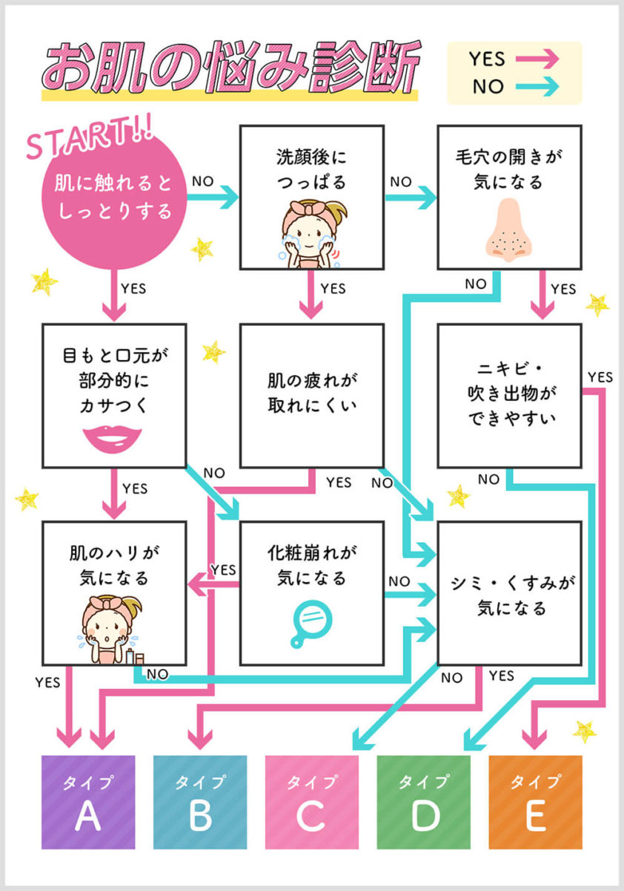

化粧水診断（コスメ診断ロードマップ③） 競合3社分析
2026-07-09 作成 ｜ 担当: Noa ｜ ステータス: 設計改修インプット確定
このdocsの位置づけ： 化粧水診断の設計改修（2026-07-09〜）にあたり、競合3社（肌ラボ・美的.com・ONEcosme）の診断ロジック・結果画面パターンを調査。
設計への反映方針は末尾の「統合推奨」を参照。ターゲットリサーチ・データ分析は別docs
「化粧水診断 リサーチ・データ分析」参照。
① 3社比較サマリー
| 肌ラボ | 美的 | ONEcosme |
|---|
| 質問形式 |
選択式6問（症状＋使用感スライダー＋デモグラ） |
YES/NOチャート10問以上（生活習慣ベース） |
YES/NOチャート5問（症状ベース） |
| 結果の見せ方 |
症状の言い換え文＋ベネフィット3点＋全商品ポジショニングマップ |
タイプ名＋回答エコーチェックリスト＋専門家コメント＋おすすめ3選 |
悩みイラスト→矢印→タイプ名（1枚に集約）＋統計データ＋年代別比較表 |
| 価格訴求 |
なし |
なし |
「1日◯円」＋トライアル価格 |
② 肌ラボ（jp.rohto.com/hadalabo/shindan/question/）
診断フロー
Q1 朝の肌状態（4択）
→
Q2 洗顔後感覚（4択）
→
Q3 一番の悩み（乾燥/美白/エイジング/肌荒れ/敏感の5択）
→
Q4 使用感の好み（とろみあり⇄なし・スライダー）
→
Q5 仕上がりの好み（もちっと⇄さらっと・スライダー）
→
Q6 デモグラ（性別・年齢）
UI特徴: カード1枚1問、進行表示「Q1/6」、ピル型ボタン（枠線のみ）
結果画面
- 結果①: 単一レコメンド商品。症状を言い換えた「あなたに」文＋ベネフィット3点＋商品画像＋CTA2種（商品情報／購入）
- 結果②: 全商品ラインを「とろみ有無×仕上がり」の2軸マップに配置し、タップで詳細へ。「もう一度診断する」ボタンあり
③ 美的.com（biteki.com/1559093/）
診断フロー
複数ページに渡るYES/NOチャート形式、最低10問以上（ページ間でループもあり本格的なフローチャート）
設問内容が症状の直接自己申告ではなく生活習慣ベース。
例：「睡眠不足になりがち」「今でもマスク着用時間が長い」「オイルを塗っても潤い不足と感じる」「ケーキなど甘い食べ物が好き」「スマホを長時間見る」「夕方になるとファンデーションがシワにたまる」「フェースラインのゆるみやたるみが気になる」等のYES/NO
結果画面
- タイプ名発表（例:「エイジングケア系」化粧水）＋「もう一度診断する」ボタン
- YESと答えた項目をそのままチェックリストで見せ返す（マスクの跡がつく✓／甘い物好き✓／スマホ長時間✓／夕方シワ✓／フェースラインたるみ✓）
- 化粧水選びのポイント（named専門家「浅利さん」のコメント付き）
- おすすめ化粧水3選（ランキング形式、商品ごとに悩み文脈タグ「シワ、たるみが気になるなら…」付き）
④ ONEcosme（onecosme.jp/column/18984）
診断フロー（画像埋め込みのフローチャート）
Q1 肌に触れるとしっとりする
→
Q2 洗顔後につっぱる
→
Q3 毛穴の開きが気になる
→
Q4 目もと口元が部分的にカサつく／肌の疲れが取れにくい／ニキビ・吹き出物ができやすい
→
Q5 肌のハリが気になる／化粧崩れが気になる／シミ・くすみが気になる
YES/NO5問で5タイプに分岐:
| タイプ | 内容 |
|---|
| A | シワ・たるみ年齢肌 |
| B | トーン・シミくすみ肌 |
| C | うるおい不足乾燥肌 |
| D | 毛穴目立つオイリー肌 |
| E | ニキビ気になるオイリー肌 |

画像出典: onecosme.jp/column/18984 診断フローチャート
結果画面
悩みイラスト（困り顔＋吹き出し「シワやほうれい線、たるみが気になる…」）→矢印→タイプ名（大きく）→「高保湿成分を配合した化粧水がおすすめ！」の成分訴求ボックス、を1枚に集約したビジュアル
統計データによる社会的証明
「POLAの調査では『老化を感じている・やや老化を感じている』女性は80%」
「20代で24%、30代で36%、40代・50代では約半数以上が『すでにエイジングケアを行っている』」
年代別比較表（20-30代／30-40代／40-50代の3商品を横並び）
商品名・ブランド名・ハリ弾力評価(S/A/A+)・コスパ「1日◯円」・こんな人におすすめ・キャンペーン情報（トライアル価格）の6項目で構成
★ 一次データ
タイプA（年齢肌タイプ）の40-50代向け枠に、うちの提携商材「アテニア ドレスリフトローション」が実際に掲載されていた。
ハリ弾力S・コスパS「1日40円」・14日間トライアルセット1,527円(税込)という実際の市場データ。これはそのままうちのPRカルーセルの価格訴求に転用できる貴重な一次データ。
⑤ 統合推奨（設計への反映方針）
取り込む（優先度高）
1. 価格を「1日◯円」＋トライアル価格で訴求（3社共通パターン）
ONEcosmeのアテニア ドレスリフトの実データ「1日40円・14日トライアル1,527円」はそのまま使える → PRカルーセルCard3の改修対象
2. 結果カードに「あなたの回答エコー」を追加（美的パターン）
Q1/Q2の回答内容を結果カードで一言見せ返す。設問構造は変えず文言追加のみで実装コスト低
3. Card2の根本示唆に統計データを1つ添える（ONEcosme・美的共通の社会的証明パターン）
悩み別の一般統計を要調査
今回は見送り
4. テクスチャー好みのスライダー質問（肌ラボ）
設問数が増えてLINE離脱リスクが上がるため
5. 全商品ポジショニングマップ（肌ラボ）
LINEのチャット形式に不向き。既存の「他タイプも見る」リンク案で代替
← 化粧水診断 リサーチ・データ分析に戻る
generated: 2026-07-09 ｜ noa-docs